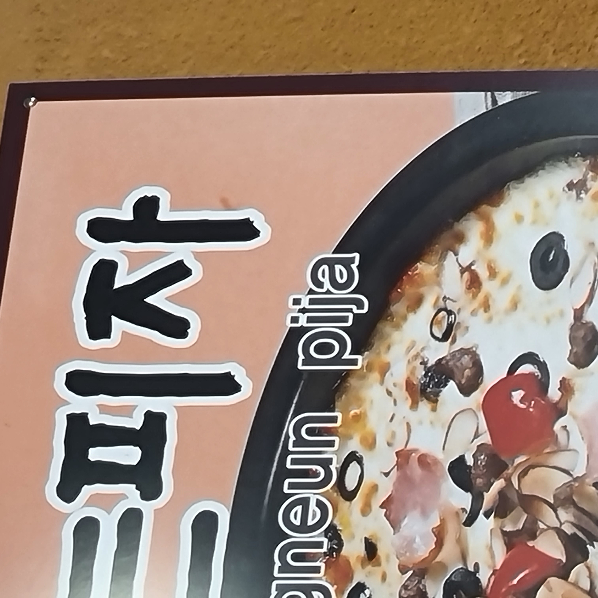
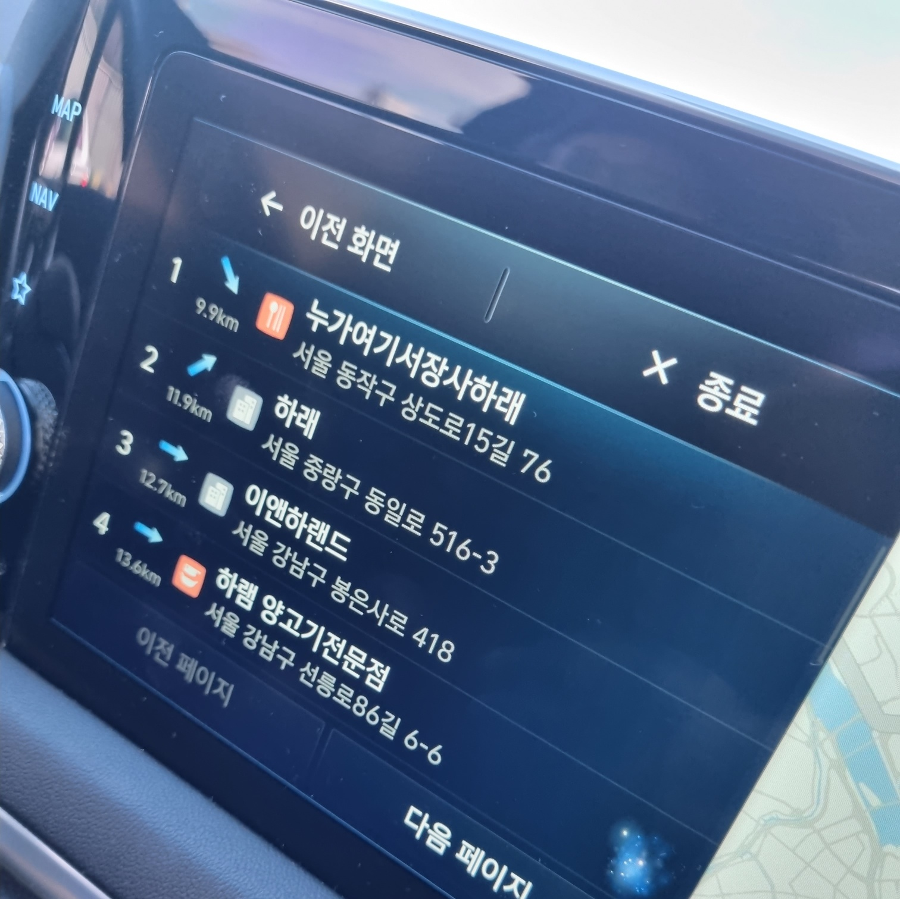
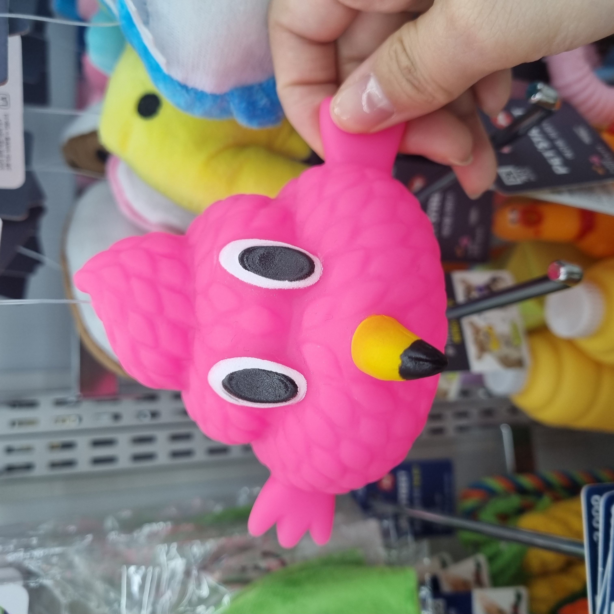
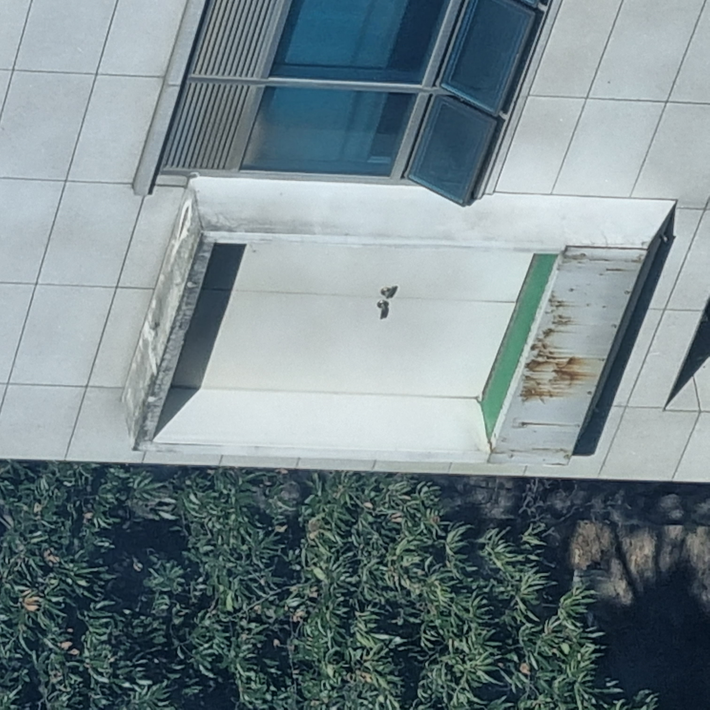
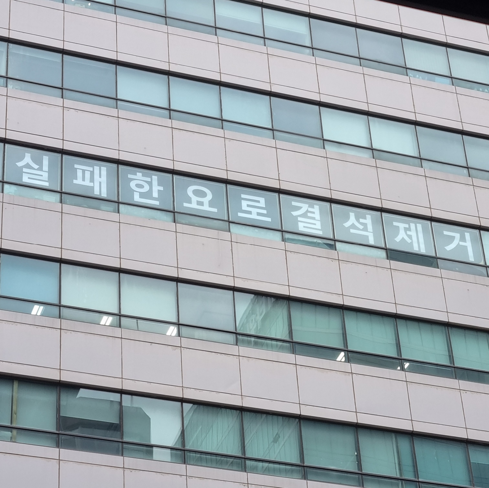

그건 저번 동선동 거리정화 봉사활동을 함께 한 사람의 말소리였다.
우리는 재밌는 것을 발견했다. 발렌시아가 스티커가 붙은 음식물 쓰레기통이었다. 길거리 음식점 앞에 지저분한 쓰레기통 위 하얀 스티커가 어색함을 넘어 인상적일 정도의 부조화를 이루고 있었다. 한때 여기저기 로고 스티커를 붙이는 것이 유행이던게 떠오르며 과시적 명품 소비에 대한 유쾌한 풍자를 보는 기분이 들었다.
담배 꽁초와 프랜차이즈 일회용 컵을 치우다 찾은 발렌시아가음식물 쓰레기통은 세상을 우습게 만드는 힘이 있었다. 종종 명품의 세계는 우리가 이해하기 난해한 감각을 내보이기도 한다. 그럼에도 그런 것을 구매하는 사람들도 존재한다.
정확히 어떤 것을 가리켜 풍자하는 것인지는 알 수 없었다. 혹은 풍자의 의도가 없이 부조화에서 오는 간극을 재밌게 여긴 것일 수도 있다. 그래도 그 블랙코미디같은 느낌을 기념삼아 나는 사진 하나를 찍어 놓았다.
오빠의 졸업식 때였다. 오빠 말로는 한 두달 정도 전부터 임금 협상을 위한 운동이 일어나고 있다고 했다. 오빠의 말대로 대학교 안에는 이런저런 대자보와 붉은 색으로 쓰여진 현수막이 잔뜩있었다. 잠시 신호를 기다리며 멈춰있을 때, 나는 한 특이한 현수막을 발견했다.
"죽을때까지"라고 쓰고 싶었을 게 분명한 현수막은 하필이면 "까"가 빠져서 미묘한 어감이 되어있었다. 진지한 노동자의 인권과 관련된 주제임을 알면서도 "죽을때지"라는 단어는 조금 웃겼다. 왠지 젊은 대학생이 아니라 인생의 황혼기에 접어드신 어르신이 맘에도 없는 말을 내뱉으시는 것 같은 느낌이었다. 심지어 다 쓰고 나서 알았는지 위쪽에 자그마하게 붙어있는 "까"가 현수막에 재미를 더하고 있었다.
나는 고민하다가 재빠르게 사진을 찍었다.
정문 앞 맥도날드라면 다들 한번쯤 가봤을 것이라고 생각한다. 거기에 2층이 있다는 것도 다들 알거다. 그럼 거기 올라가는 길에 다소 섬뜩하게 생긴 도널드가 우리를 보고 있다는 건 알고 있나?
귀여운 캐릭터 사이에 혼자만 다른 굵기로 그려진 도널드는 신경쓰면 한없이 신경쓰이는 존재였다. 인테리어를 대체 누가 한건지 궁금하게 하는 감각을 뽐내고 있다. 묘하게 퀄리티가 떨어지는 도널드는 지나치기에는 아쉬운 느낌이 들었다. 머리는 제대로 뒤에 있는 느낌이 들면서 왼쪽 아래는 다 보이는 도널드는 눈을 거슬리게 했다. 나는 햄버거를 먹고 내려가는 길에 일러-image trace 기능으로 만들어진 것 같은 도널드를 한 장 찍어두었다
그래도 다행이 벽면에는 여러 도널드가 우리를 지켜보고 있다. 한 명이었다면 오히려 소름끼치지 않았을까?
